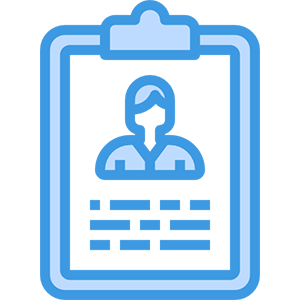
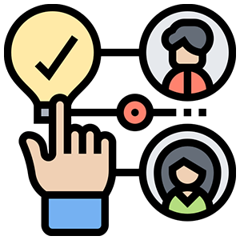

채용프로세스
-

서류전형
한솔케미칼의 채용원칙과 직무별 적합 지원자를 선별하는 과정입니다.
-
1차 면접 (역량면접)
그룹의 인재상인(성장형인재, 개방형인재, 학습형인재, 실행형인재)의 검증을 지원자의 경험중심의 인터뷰를 통하여 검증하고자 하며 복수의 면접관이 1명의 지원자에 대하여 심층적으로 살펴봅니다.
자신의 의사 개진능력 및 팀과의 협력은 회사 생활에 가장 필요한 역량입니다.
-

2차 면접 (인성면접)
1차 면접 합격자를 대상으로 실제 업무를 수행하기 위한 능력을 평가하는 실무진 면접 및 한솔그룹의 미래 인재가 될 가능성을 평가하기 위한 임원진 면접이 실시됩니다.
2차 면접은 각 계열사의 산업 특성에 맞게 운영됩니다.
2차 면접 시 채용 검진이 진행될 수 잇습니다.
채용 검진은 합격여부를 결정하지 않습니다.
-
합격자 발표
2차 면접 대상 중 입사여부를 확인하여 최종 합격자 발표를 진행합니다. 합격자 발표 이후 각 사업부 별로 추가 합격자 통보를 진행할 수 있습니다.